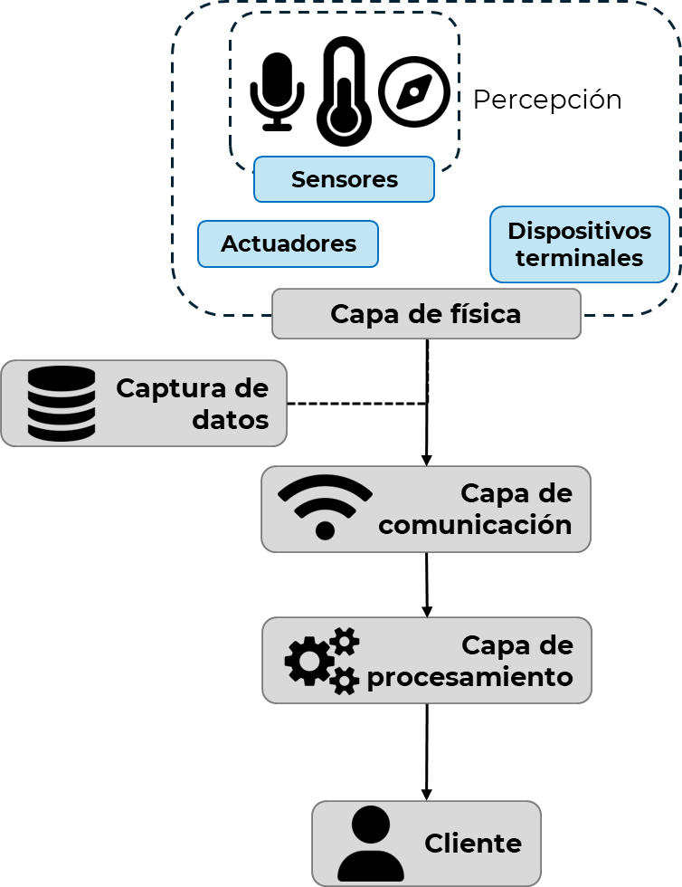
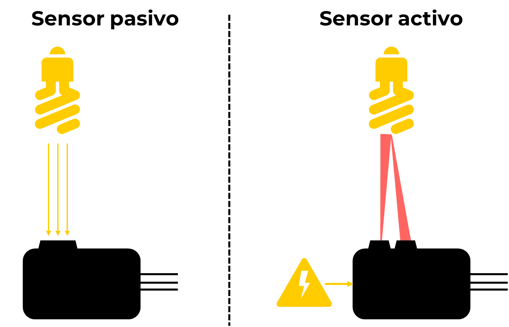
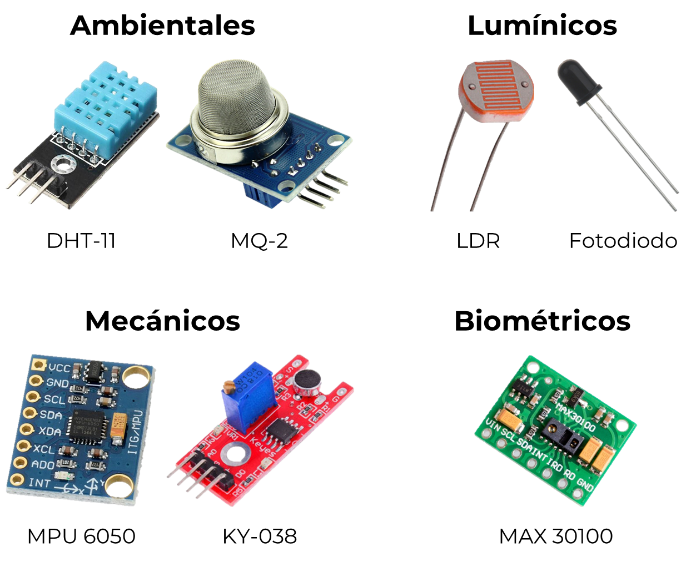
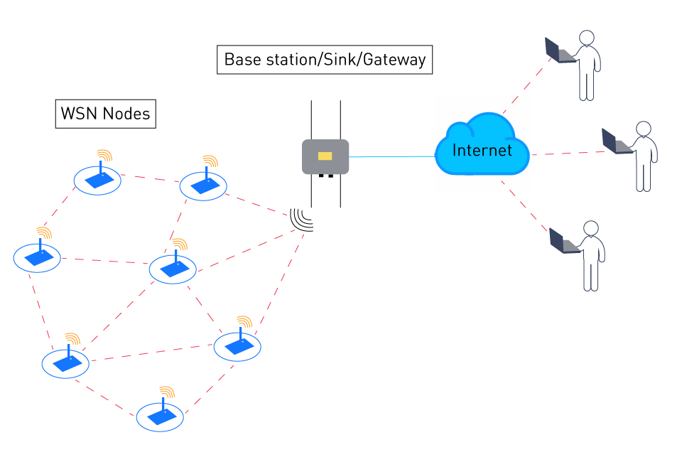
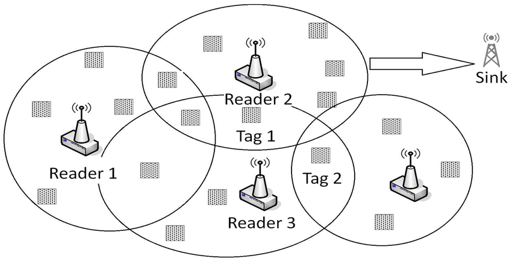

Módulo 2.1. Sensores en IoT
Los sensores son elementos fundamentales en cualquier sistema IoT, ya que permiten capturar información del entorno físico y transformarla en señales que puedan ser interpretadas por dispositivos digitales. Comprender sus principios de funcionamiento, tipos de señal y clasificación por variable monitoreada es esencial para diseñar soluciones efectivas y funcionales.
Video 1:
Electrónica. Sensores en aplicaciones de IoT. | | UPV
Ver completo

Mapa conceptual: "Sensores y su rol en la capa de física IoT". Elaboración propia
Principio de funcionamiento
Los sensores pueden clasificarse según su principio de funcionamiento en dos grandes grupos:
- Sensores activos: requieren una fuente de energía externa para emitir una señal (como una onda ultrasónica, infrarroja o de radiofrecuencia) que interactúa con el entorno. Luego detectan el reflejo o cambio resultante. Ejemplo: sensor ultrasónico HC-SR04, que mide distancia emitiendo pulsos de sonido.
-
Sensores pasivos: no generan ninguna señal; simplemente detectan la presencia o variación de una magnitud existente. Estos
sensores suelen ser más simples y de menor consumo. Ejemplo: una LDR (resistencia dependiente de la luz), que cambia su resistencia
en función de la luz ambiental.

Figura 2: Diagrama comparativo sensor activo vs pasivo. Elaboración propia
Esta clasificación es especialmente relevante en aplicaciones donde se debe cuidar el consumo energético o la complejidad del sistema.
Tipo de señal de salida
Dependiendo de cómo entregan la información, los sensores también se clasifican por el tipo de señal:
- Binaria o digital (ON/OFF): reportan solo dos estados posibles, como encendido/apagado o presencia/ausencia. Ejemplo: interruptores magnéticos o sensores de puerta.
- Señal analógica: entregan una salida continua proporcional a una magnitud física. Esta señal debe ser convertida a digital (ADC) para su procesamiento. Ejemplo: sensores de temperatura LM35 o NTC.
- Señal digital (codificada): el sensor contiene circuitos internos que ya digitalizan la información antes de enviarla por protocolos como I2C o 1-Wire. Ejemplo: sensor DHT11 para temperatura y humedad.
| Tipo de señal | Ejemplos | Ventajas | Aplicaciones típicas |
|---|---|---|---|
| ON/OFF (Binaria) | Sensor magnético de puerta | Simple de leer y procesar; bajo costo | Sistemas de seguridad, alarmas, conteo de objetos |
| Analógica | LDR (Fotoresistencia) | Permite detectar variaciones continuas y precisas | Medición de luz ambiental, control de brillo |
| Digital | DHT11 (temperatura y humedad) | Salida ya procesada y lista para microcontroladores | Monitoreo ambiental, agricultura, domótica |
Entender el tipo de señal permite seleccionar correctamente los pines del microcontrolador y los métodos de lectura necesarios.
Clasificación según la variable monitoreada
Los sensores pueden clasificarse también según la magnitud física que detectan. A continuación, se resumen los tipos más comunes en sistemas IoT educativos y prácticos:
| Categoría | Variables comunes | Ejemplos de sensores |
|---|---|---|
| Ambientales | Temperatura, humedad, presión, luminosidad | DHT11, BMP180, LDR |
| Mecánicas | Proximidad, posición, vibración, aceleración | HC-SR04, MPU6050, encoder rotativo |
| Químicas | Gases, pH, calidad del aire | MQ-2, TGS2600 |
| Biométricas | Pulso, oxigenación, temperatura corporal | MAX30100, sensores NTC |
| Acústicas | Sonido, vibración acústica | Micrófono KY-038, sensor piezoeléctrico |

Figura 3: Collage de sensores etiquetados por variable monitoreada. Elaboración propia
Cada sensor responde a una necesidad particular en un sistema IoT, desde monitoreo ambiental hasta control biomédico o domótica.
Tecnologías habilitantes en sensores
En un entorno IoT, los sensores no solo capturan datos, sino que forman parte de una infraestructura más amplia, que incluye conectividad, procesamiento y análisis. Algunas tecnologías asociadas a sensores son:
-
WSN (Wireless Sensor Networks): redes de sensores inalámbricos que se comunican entre sí y con una estación base.
Usadas en aplicaciones de agricultura inteligente, monitoreo estructural y ciudades inteligentes.

Figura 4: Esquema de red WSN. Tomado de link
-
RFID Sensor Networks: combinación de sensores con etiquetas RFID, permitiendo la identificación y medición simultánea.
Usadas en logística y trazabilidad.

Figura 5: Esquema de red RFID. Tomado de link
Estas tecnologías permiten expandir las posibilidades de los sensores, logrando redes distribuidas, adaptables y en tiempo real.
Casos reales de aplicación de sensores
- Vivienda inteligente: sensores de temperatura, movimiento y humedad regulan automáticamente la ventilación, calefacción y seguridad.
- Agricultura de precisión: sensores de humedad del suelo, temperatura y pH permiten decisiones de riego inteligentes.
- Salud conectada: sensores biométricos envían datos en tiempo real para monitoreo remoto de pacientes.
Reflexión: ¿Qué sensor usarías para detectar la apertura de una puerta? ¿Cómo difiere la lectura de un sensor analógico frente a uno digital?
Conclusiones
El conocimiento de sensores en IoT es clave para el diseño de sistemas funcionales. Dominar su clasificación por funcionamiento, señal y variable monitoreada permite seleccionar adecuadamente los componentes en función del problema a resolver. En conjunto con las tecnologías emergentes como las redes de sensores y la computación distribuida, los sensores se convierten en los sentidos inteligentes del IoT.
| Variable monitoreada | Principio físico | Tipo de señal | Ejemplos |
|---|---|---|---|
| Temperatura | Termoeléctrico | Digital | DHT11 |
| Luz | Fotoeléctrico | Analógica | LDR |
| Movimiento | Ultrasónico | Digital | HC-SR04 |
| Aceleración | Inercial | Digital/I2C | MPU6050 |
| Sonido | Acústico | Analógica | KY-038 |
Referencias
- M. Albishi, B. Soh, A. Alshammari y M. Alsulaiman, "Challenges and Solutions for Applications and Technologies in the IoT," Procedia Computer Science, vol. 113, pp. 225-232, 2017.
- A. Colakovic y M. Hadzialic, "Internet of Things (IoT): A Review of Enabling Technologies, Challenges, and Open Research Issues," Computer Networks, vol. 144, pp. 17-39, 2018.
- D. Mehta, S. Sahni y A. Khanna, "Internet of Things: Vision, Applications and Challenges," Procedia Computer Science, vol. 132, pp. 1263-1269, 2018.
- M. Shahid y A. Aneja, "Internet of Things (IoT): Vision, Application Areas and Research Challenges," IEEE International Conference on Communication and Signal Processing, 2017.
- X. Lin, J. Yu, L. Zhang, H. Ni y Y. Yang, "A Survey on Internet of Things: Architecture, Enabling Technologies, Security and Privacy, and Applications," IEEE Internet of Things Journal, vol. 4, no. 5, pp. 1125-1142, 2017.
- I. Ud Din et al., "The Internet of Things: A Review of Enabled Technologies and Future Challenges," IEEE Access, vol. 7, pp. 127276-127288, 2019.